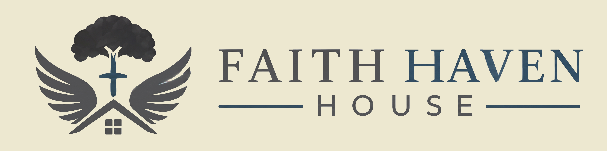
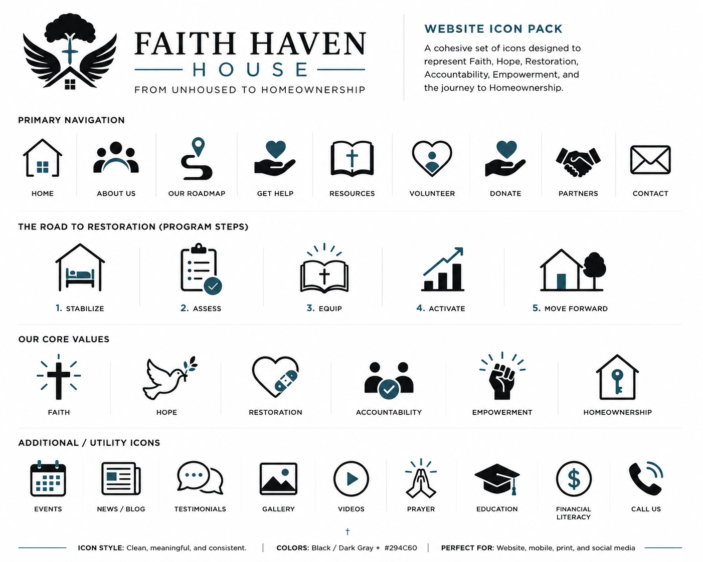

Faith Haven House Website Demo
A new digital presence for restoration, accountability, and the road from unhoused to homeownership.

A new digital presence for restoration, accountability, and the road from unhoused to homeownership.
Warm editorial styling, faith-centered focus, and a clear presentation of core values that explain the organization's spiritual and physical care model.
The interactive 5-stage Roadmap to Homeownership guides users through the structured, accountable pathway to stability and housing independence.
Streamlined sign-up forms for volunteers, Meal Train coordinate tools, and donor integration portals built to turn passive empathy into immediate help.
Professional design structure, searchable FAQ accordions, transparent contact lists, and clear guidelines build safety, credibility, and authority.
The updated site hierarchy guides visitors along a structured path designed to answer questions and prompt action.
Communicates the core mission instantly.
Explains the rebuilding process transparently.
Presents a clear, structured intake step.
Identifies exact areas of service needed.
Encourages support through high contrast CTAs.
By establishing pathways for different visitors (seeking shelter, looking to volunteer, or wanting to donate), the site avoids confusion. Key value cards build credibility, while navigation is simple and friendly.
Strategic placement of CTA buttons across the header, body panels, and footer ensures opportunities to support the ministry are never hidden. Every link represents an intake step or a way to serve.
The new digital pre-screening system gives prospective residents in crisis an organized, non-intimidating way to begin their recovery path.
Simple, readable layouts reassure users, replacing heavy paperwork with an inviting, step-based digital interview form.
Gathers immediate data (needs, contact details, basic eligibility rules) so coordinators can evaluate fit prior to physical interview.
Introduces the resident rules early in the process, setting expectations for personal responsibility from day one.
The new memorial page dedicated to Dareth Renee Jeffers preserves the history and spiritual foundation of Faith Haven House.
She established Faith Haven House as a harbor where faith, structure, and accountability build path for unhoused men.In Loving Memory · Dareth Renee Jeffers
Adding a dedicated memorial path builds emotional connection with churches and donors. It emphasizes that Faith Haven is more than a shelter—it is a spiritual legacy.
The refreshed volunteer portal organizes service opportunities into clear pathways, making it simple for churches and helpers to sign up.
Supervise daytime facility operations, support residents, and coordinate check-in tasks.
Prepare and deliver warm, nutritious dinners to support our evening fellowship time.
Teach classes covering financial literacy, resume design, job hunting, and home care.
Offer spiritual counseling, support accountability milestones, and guide personal growth.
The sign-up sheet collects availability, contact info, and skills, helping our coordinators slot help where it's needed most without administrative clutter.
A custom color palette establishes trust and guides visitor actions across the digital portal.
Creates feelings of calm, hospitality, and physical safety.
Conveys institutional trust, structural strength, and wisdom.
A comfortable neutral background that feels warm and welcoming.
Terracotta (#C86B4A) serves as the primary action color. By contrasting with the blue-dominated layout, it naturally draws focus without appearing overly commercial.
Generosity Indicator: Donation links use this terracotta tone, creating an easily spotted action target for donors that respects the visual atmosphere.
The new custom icon pack establishes unified visual icons for values, resources, and utilities.
Icons are optimized for both light and dark backgrounds, maintaining high contrast. Clean outlines fit harmoniously alongside our editorial typography.
Applied across roadmap stages, values grids, and resource links. Icons act as visual aids, helping users scan pages quickly and navigate easily.

fhh-icon-pack.png placeholder containing values (Faith, Hope, Restoration) and program coordinates (Meals, Mentors).
The full website has been built, optimized for mobile viewports, and deployed to a staging environment for review.
Experience the fully updated digital sanctuary, including the interactive Roadmap journey, Dareth Renee Jeffers memorial page, pre-screening intake form, and live responsive grid layouts.
Open Staging Site →Scan or click to view the responsive layouts, color systems, and forms live in real-time.
Test navigation pathways, pre-screen forms, and memorial layout across viewport sizes.
Address feedback regarding specific page copy, images, partner assets, and details.
Map the domain, set up analytics, configure donation routes, and launch public portal.
“Faith Haven House is positioned to become a stronger and more trusted voice for men seeking a structured pathway forward.”